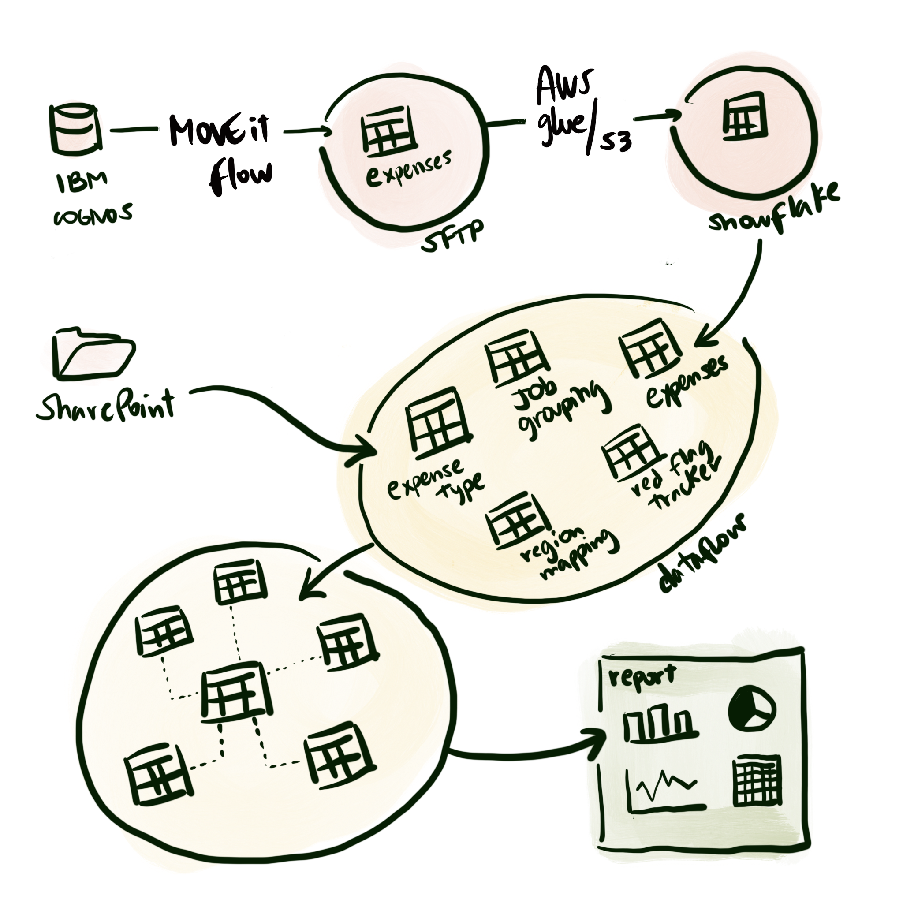

Global Travel & Expense (T&E) activity generates thousands of transactions across employees, regions, and vendors. While SAP Concur streamlines submission and approval workflows, it does not inherently provide a robust, cost-effective mechanism for continuous fraud detection or real-time risk monitoring.
For Internal Audit, this meant relying on periodic sampling rather than full-population analytics. For Global Controllers, it limited proactive visibility into policy compliance and spend trends. For senior finance leadership, it created potential exposure to fraud, waste, and reputational risk.
The organization needed a scalable, continuous monitoring solution that could surface anomalies in real time without incurring the high cost of additional third-party modules.
SAP Concur Travel & Expense is a cloud-based platform used to manage employee travel bookings, expense submissions, approvals, and reimbursements. While effective operationally, reporting capabilities are primarily transactional and not designed for enterprise-level risk analytics across global spend populations.
A centralized data pipeline was developed to extract, model, and transform global T&E data into a governed Power BI analytics environment. The architecture enabled full-population analysis, standardized risk indicators, and dynamic filtering across entities, regions, and employees.
A comprehensive Power BI monitoring solution was developed consisting of 14+ analytic report pages tailored for Internal Audit and Global Controllers. Each page was intentionally designed to surface specific risk indicators and behavioral patterns.
Automated alerts were integrated to flag high-risk transactions, enabling proactive investigation rather than reactive sampling.